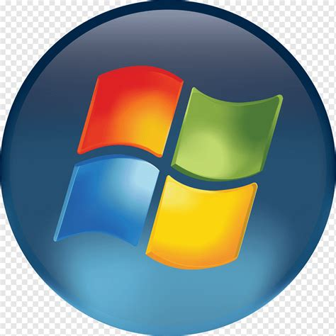
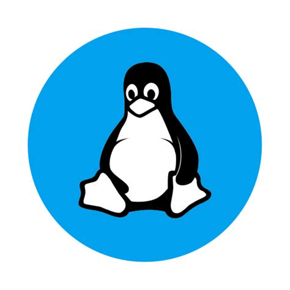
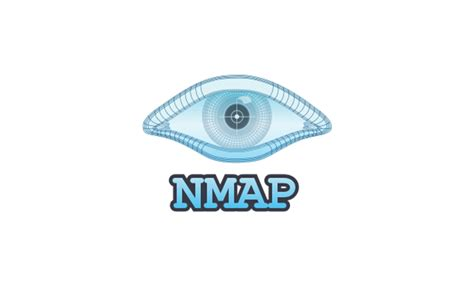

About Me
I am a dedicated Digital Forensics and Cybersecurity Student at Eastern Kentucky University, with a passion for protecting digital information and systems. As a member of the CCDC team, I thrive in challenging environments, continually seeking to expand my knowledge and skills in the ever-evolving field of cybersecurity.
Skills
As a digital forensics and cybersecurity enthusiast, I bring hands-on expertise with essential tools and platforms. Proficient in both Windows and Linux environments, I can navigate and manage systems with ease. My programming knowledge in Java enhances my analytical and problem-solving skills, while Nmap and Wireshark provide me with powerful network scanning and packet analysis capabilities for proactive and defensive security practices.



